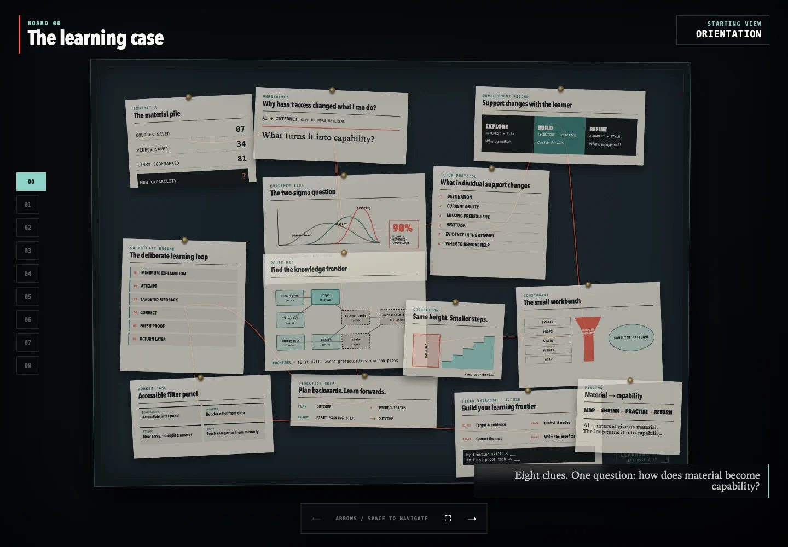
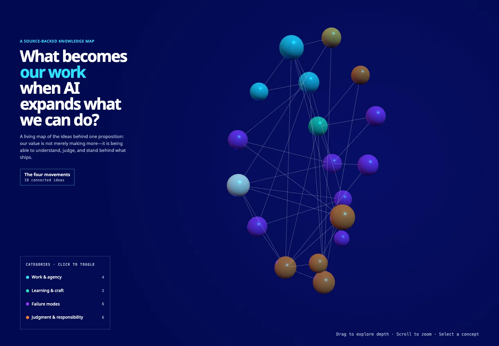

Designer to production: my AI-native workflow
I mock in HTML, compare AI-made variations, and ship the change myself or hand engineers a working branch. 40 merged PRs in 10 months.
Meenakshi Sundaram — Senior UX Designer, Chennai
Ten months shipping production code as a designer on Appian Composer, an AI agent that builds enterprise apps.
All three cases are about Appian Composer, Appian’s AI agent for building enterprise apps.
I mock in HTML, compare AI-made variations, and ship the change myself or hand engineers a working branch. 40 merged PRs in 10 months.
I built a clickable prototype to compare three ways an AI agent can turn a plan into real app objects, and what each one costs.
With manual save, the in-between AI edits can’t be restored. I tested autosave with users, got product and engineering to adopt it, then designed how an agent’s whole run is restored.
Two knowledge-sharing sessions at our UX team meeting. I built a small site for each so people could poke around after.

An evidence board for a 45-minute session on why AI-era learning ends up as saved links. Eight cases, a presenter view with the script, and 12 tests that check the content.
Shared with my UX team, Jul–Aug 2026.
Open site: Session 1, The learning case
A 3D map of 18 ideas and 36 links between them. The argument: as AI widens what we can do, the value moves to judging what ships and standing behind it. Needs WebGL.
Shared with my UX team, Jul–Aug 2026.
Open site: Session 2, What becomes our workBefore that, on Spotknack, I coached 5 college students through end-to-end design workflows.
I wanted a teleprompter for my own pitches, so I made one in plain HTML, CSS and JS. It works offline and tracks nothing. 30 tests, accessible controls.
Open it: pitch-teleprompterMy Watch Later list got out of hand. This Chrome extension turns it into keyboard triage, grouped by channel. I built it with an AI coding assistant.
See the code: YT-helpI studied electrical engineering and came to UX through a UX engineering internship in 2021. Now I’m a designer who ships code.
When something annoys me, I build the fix. I also like making ideas explorable, which is why each of those two sessions got its own site.
A design team that wants to work AI-native, where designers ship real changes, not just specs. I’ve worked this way for ten months on a shipping AI product, and I’ve started sharing it with my own team. Here’s what it takes to make it work for a team.